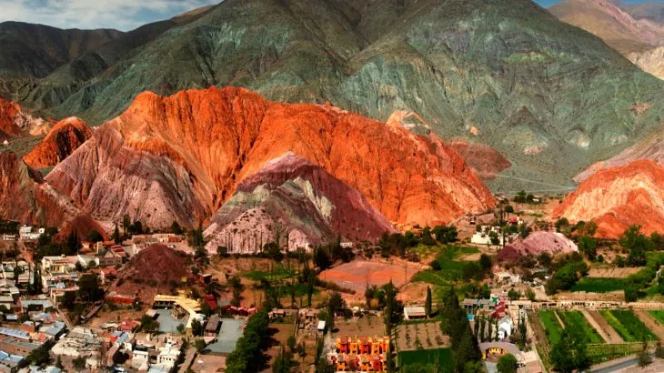
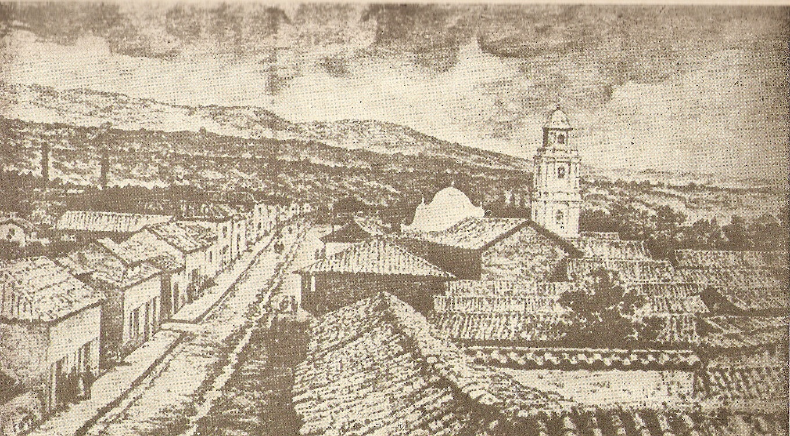
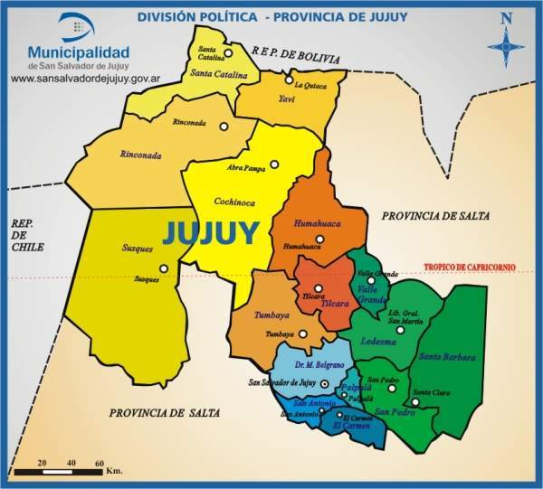
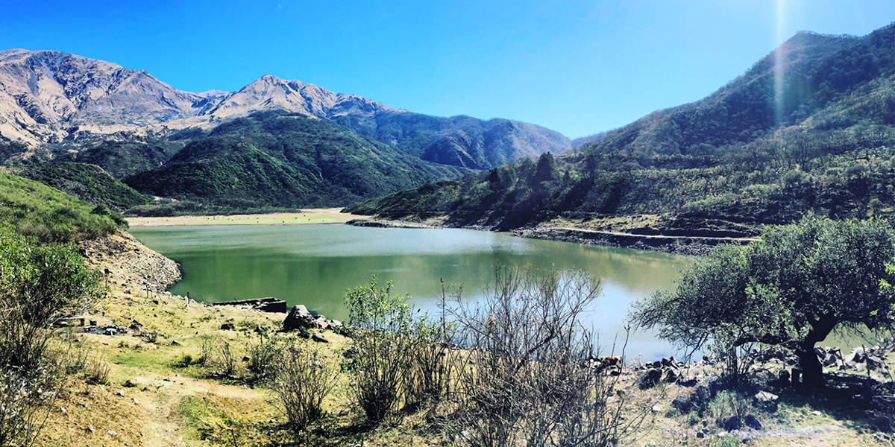
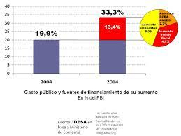

Jujuy, oficialmente la provincia de jujuy, es una de las 23 provincias de la Republica argentina y se ubica al noroeste del país. Cuenta con una población de 673.307 habitantes (2010), una superficie de 53.291 km² y una densidad poblacional de 12,7 hab./km².
Limita al oeste con la republica de chile hasta el trifinio cerro Zapaleri, donde comienza su frontera con el Estado plurinacional de bolivia(hacia el norte), y al este y sur con la provincia de salta. Su capital y ciudad más poblada es San salvador de jujuy mientras que ciudades como San pedro de jujuy, Palpalá, Perico y Libertador General San Martín también son importantes centros de población. Su economía representa el 1,1% del PBI Nacionaly su territorio representa el 1,68% de la superficie nacional y es la cuarta jurisdicción de primer orden menos extensa, por delante de misiones, tucuma y la ciudad de Buenos Aires
En el siglo XV, el actual territorio de Jujuy estaba poblado por diversos pueblos indígenas. Predominaban los ocloyas, Quechuas, Aimaras y los jujuyes, de quienes deriva el nombre de la provincia, aunque los atacameños -en especial la parcialidad lipe- eran predominantes en la región puneña. Los omaguacas eran una síntesis étnica de calchaquíes y atacameños con un fuerte componente genético arawak. La región formó parte del Virreinato del Perú hasta 1776, en que la corona española creó el Virreinato del rio de la plata Al subdividirse administrativamente el Virreinato del Río de la Plata, conforme a la Real Ordenanza de Intendentes del 28 de enero de 1782,la actual Provincia de Jujuy quedó ubicada dentro de la Gobernación Intendencia de San Miguel de Tucumán.
Geográficamente, la provincia Provincia de Jujuy se divide en cuatro grandes regiones: La Puna o altiplano. La Quebrada de Humahuaca. Los Valles orientales, Yungas De oeste tiende a bajar desde altitudes que van desde los 6000 a los 500 m s. n. m., las mayores altitudes se ubican en la cordillera de los andes especialmente en el sector noroeste de la provincia en donde se destaca el cerro Vilama ({5578 m s. n. m.), el cerro Zapaleri (5653) y sobre todo la ramificación lateral andina de las Serranías de Zapaleri que tiene su cima a los {5959 m s. n. m. en el Nevado de San Pedro, estas cumbres señalan el límite entre la Puna de Jujuy y la Puna de Lípez, la Puna de Jujuy al sur de los citados accidentes orográficos y al sur del Cerro Branqui señalan asimismo la estructura del tipo graben, algunos de los valles son amplios y han dado lugar a cubetas o cuencas endorreicas en cuyo fondo se ubican salares como el de Cauchari-Olaroz, las muy alcalinas y salobres lagunas de Vilama, la de Guayatayoc, la de Pozuelos, la laguna de Rontuyoc y las Salinas Grandes del NOA.
Al este de la Sierra del Aguilar y la Serranía de Chañí (el Nevado de Chañí alcanza los 6200 m s. n. m.) horsts más occidentales que señalan el límite del Altiplano el terreno cae en el prolongado y elevado graben de la Quebrada de Humahuaca abriéndose hacia el sur en la zona de quebrada y valle donde se encuentran las ciudades de San salvador de Jujuy, Palpalá, Perico y San Pedro de Jujuy, en este graben los valles son fértiles y por su vaguada o fondo discurre el Río Grande que baja desde la Quebrada de Humahuaca y el Río Chico de Jujuy o Xibi Xibi que baja desde la Serranía precordillerana del Chañi, ambos citados ríos confluyen en la ciudad de San Salvador de Jujuy y toman un único gran cauce con rumbo hacia el noreste llamado río San Francisco (afluente del río Bermejo y, con este los anteriores, integrante de la Cuenca del Plata.
La laguna de Leandro tiene una particular presencia en la mitología popular, pues una leyenda asegura que cuando los españoles pidieron el rescate del Inca Atahualpa los pueblos de la región organizaron una caravana llevando el oro y la plata exigidos. Mas llegando a la mencionada laguna, se enteran de que el Inca ha sido asesinado, decidiendo entonces tirar las riquezas en el fondo de la laguna. La leyenda sostiene que un poblador de la zona llamado Leandro se enteró por un viejo de la existencia del tesoro. Determinado a hacerse con el botín Leandro excavó un zanjón para desaguar la laguna, pero al casi cumplir su cometido un viejo dios del cerro advirtió de su acción, dejando Leandro la tarea. Sin embargo, tiempo después el runa volvió a sus esfuerzos, siendo entonces llevado por el dios a la laguna. Aunque con distintas variantes esta es la esencia de la leyenda, basada, al parecer, en los dorados colores que se observan en la laguna al atardecer
La estructura económica se basa en las actividades primarias. Entre los cultivos están: la caña de azúcar, banana y el tabaco, seguidos de los cítricos, mangos, papayas, chirimoyas y paltas como producciones "tradicionales" (aunque modernas ya que datan del siglo XX) de la provincia. A esto debe sumarse la producción de combustibles: petróleo, gas y la ancestral actividad minera: (plomo, plata, cobre, oro, salitre, potasio, bórax). En la cordillera oriental se destaca la producción de metales como hierro, zinc, plata y plomo (en las minas de Zapla y El Aguilar), mientras que en la Puna se destaca la producción de sales. La actividad comercial se concentra en las cercanías de la capital provincial donde se encuentra la planta siderúrgica de Palpalá y en el sector oriental, en la zona del valle del río San Francisco se destacan las agroindustrias. La situación de Jujuy es comercialmente estratégica: la Quebrada de Humahuaca al norte y el Paso de Jama en el oeste son dos rutas comerciales practicables en toda estación y con un intenso tráfico.
| posicion | ciudad | departamento | poblacion(2010) |
|---|---|---|---|
| 1 | San Salvador de Jujuy | Doctor Manuel Belgrano | 260 316 |
| 2 | San Pedro de Jujuy | San Pedro | 60 420 |
| 3 | Palpalá | Palpalá | 52 631 |
| 4 | perico | El Carmen | 49 125 |
| 5 | Libertador General San Martín | Ledesma | 47 011 |
| 6 | Monterrico | El Carmen | 20 188 |
| 7 | La Quiaca | Yavi | 17 199 |
| 8 | el carmen | el carmen | 16 501 |
| 9 | Fraile Pintado | Ledesma | 15 182 |
| 10 | humahuaca | humaguaca | 13 213 |